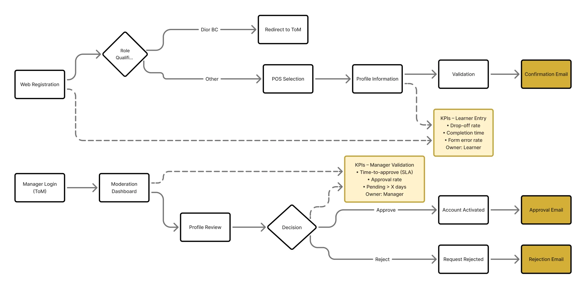
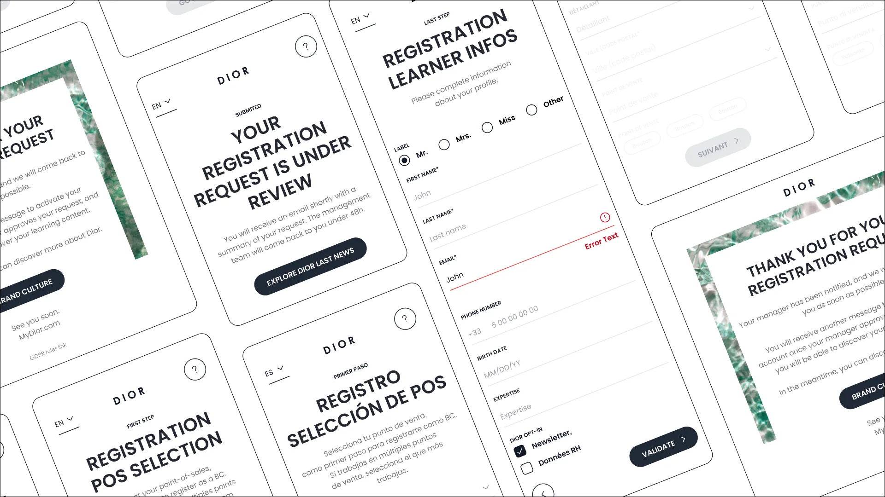
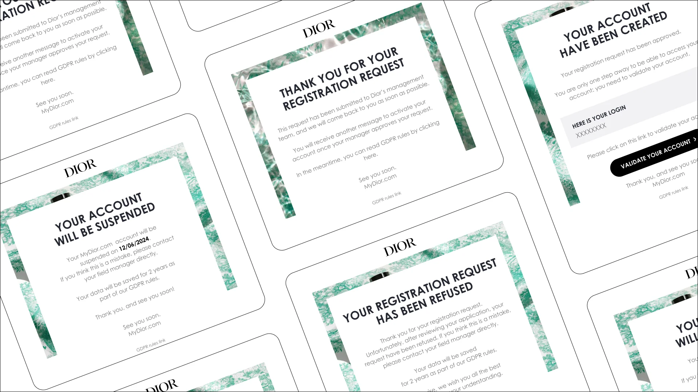
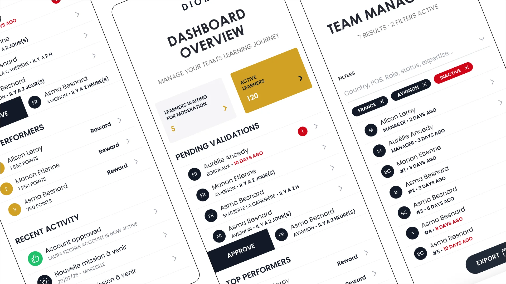
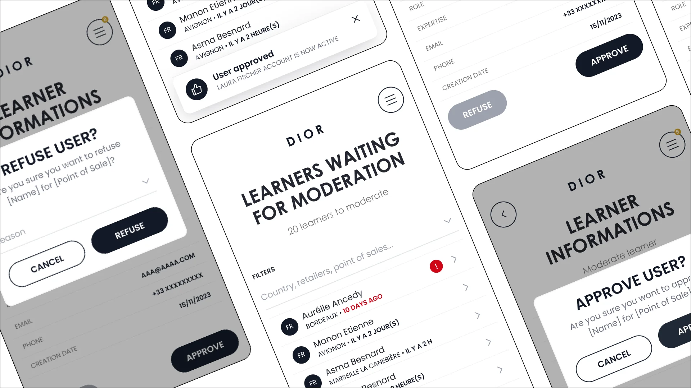
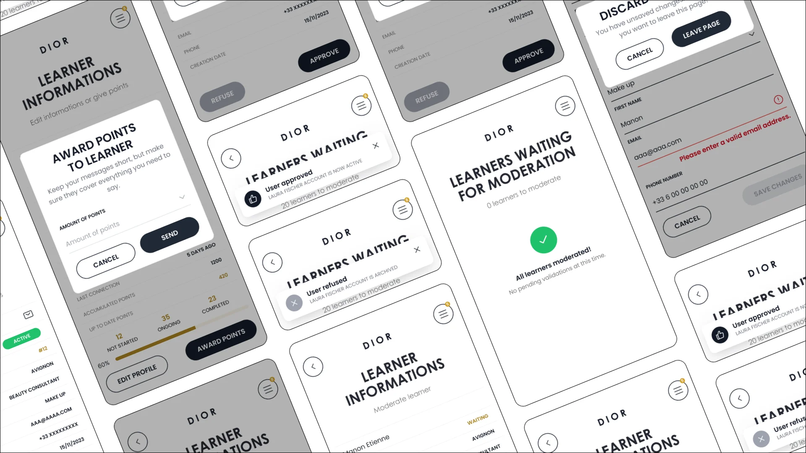
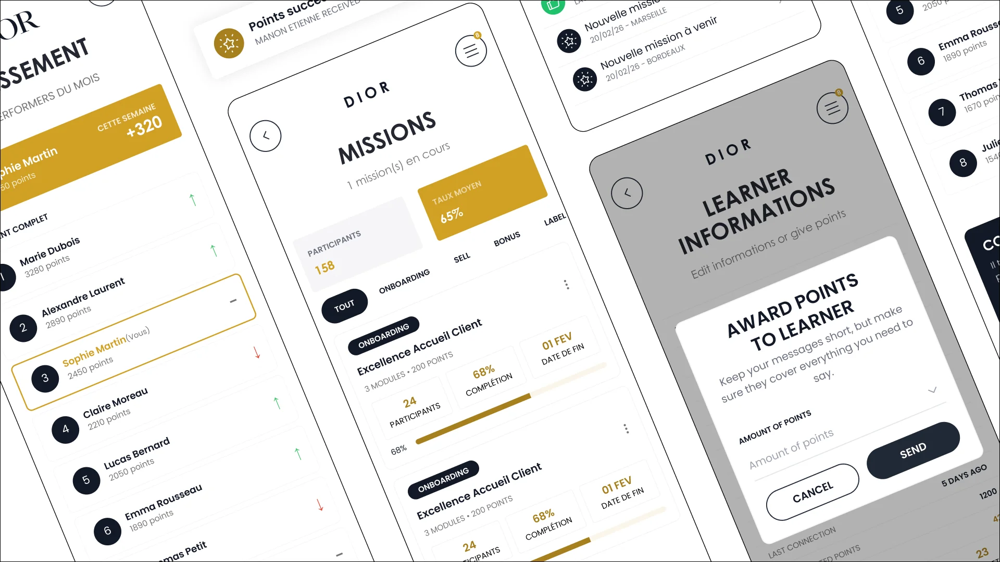

Refonte de l’onboarding et de l’expérience manager pour améliorer
la lisibilité et l’engagement à l’échelle internationale des équipes Retail.
Dior
Product Designer Senior
(Architecture de l'information, Flows, Design System)
Plateforme Web B2B
SaaS Interne
Managers Retail,
Learners (Équipes de vente)
Le réseau retail Dior couvre de nombreux marchés, avec des milliers de conseillers formés chaque année dans des langues, des contextes et des organisations différents.
Les managers devaient suivre leurs équipes sans réelle visibilité sur les inscriptions et la progression.
Problématique : comment unifier la formation, le suivi managérial et l’engagement des learners à l’échelle mondiale, sans sacrifier les spécificités locales ni la sobriété opérationnelle attendue par Dior ?
L’inscription reposait sur une succession d’emails et d’écrans sans continuité.
- Les utilisateurs ne comprenaient pas leur progression
- Erreurs fréquentes de rattachement (point de vente)
- Manque de visibilité côté managers
- Simplifier le tunnel d’inscription
- Sécuriser le rattachement utilisateur
- Donner une vision claire aux managers
- Améliorer l’activation des comptes
Le projet a consisté à structurer un cycle de vie utilisateur clair :
Onboarding → Validation manager → Activation → Suivi
Mon objectif : transformer un outil administratif en interface premium et opérationnelle, alignée avec les standards de la Maison Dior.
Analyse des parcours learner et manager de bout en bout : lecture des flows, accessibilité et compréhension des écrans et des emails.
Questionnaires envoyés aux managers et aux learners, complétés par des échanges par email, sur leurs usages et leurs difficultés tout au long du parcours.
Ces retours ont nourri les priorités du projet : le tunnel d'inscription, le rattachement au point de vente et la visibilité côté managers.

J'ai repensé le parcours d'onboarding pour le simplifier. L'objectif : créer un point d'entrée unique et sans friction, ensuite découpé en étapes pour réduire la charge cognitive et limiter les erreurs


Le flow des notifications par mail était générique, sans contexte ni action claire. J'ai redessiné le système avec une action/feedback unique par email, personnalisée par rôle et langue du learner.
Les managers accèdent en un coup d’œil aux indicateurs clés par point de vente : progression, statut des apprenants et niveau d’engagement.
L’information est centralisée pour éviter les allers-retours entre outils et permettre une compréhension rapide de la situation terrain.


Les éléments nécessitant une action (validations, profils en attente) sont automatiquement mis en avant.
Le système guide le manager en hiérarchisant les priorités, réduisant ainsi le temps de décision et les risques d’oubli.
Chaque interaction critique (validation, refus, archivage, attribution de points) génère un retour visuel clair et instantané.
Ces feedbacks permettent de sécuriser les actions et de renforcer la confiance dans le système, sans nécessiter de vérification supplémentaire.

Des mécaniques de reconnaissance activées par le manager : validation des acquis en direct, attribution de points et notifications contextualisées, pour faire du suivi un geste d’équipe plutôt qu’une tâche administrative.

Handoff Figma classique avec les composants et leurs états, accompagnement des équipes de développement, puis recette des écrans livrés : validation de leur conformité avec les maquettes avant la mise en ligne.
Les learners comme les managers avaient d'abord besoin de savoir où ils en étaient : progression, statut, actions en attente.
Un message générique noie l'utilisateur. Un message avec une seule action, personnalisée par rôle et par langue, le fait agir.
Les frictions des managers et celles des learners n'étaient pas les mêmes : d'où deux expériences distinctes, au sein d'un même système.
En donnant à chaque acteur exactement ce dont il avait besoin, la plateforme est devenue un outil que les équipes voulaient utiliser, pas seulement qu'elles devaient utiliser.